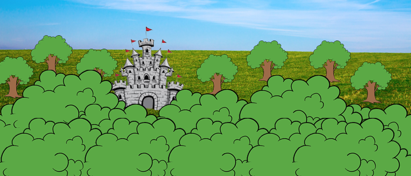

You make your way towards the top of the high hill. You can see everything, you spot a castle.
You decide to go towards it.
Make your way down the hill.
or
You decide to go back to the town.
Go back to the town.